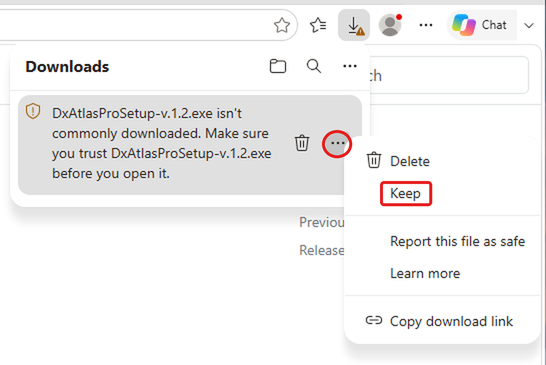
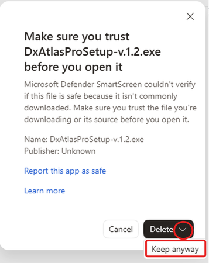
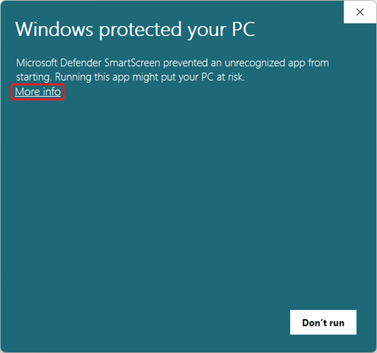
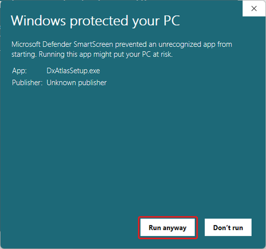
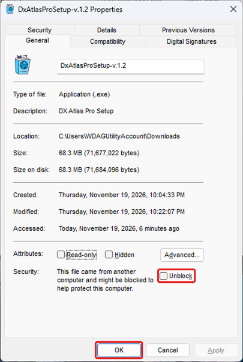
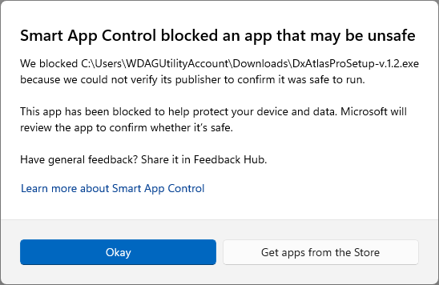
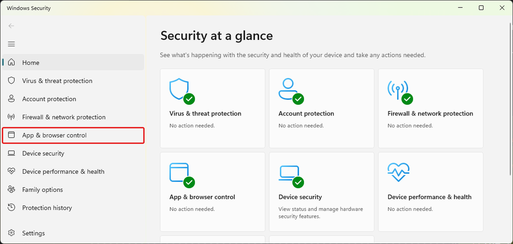
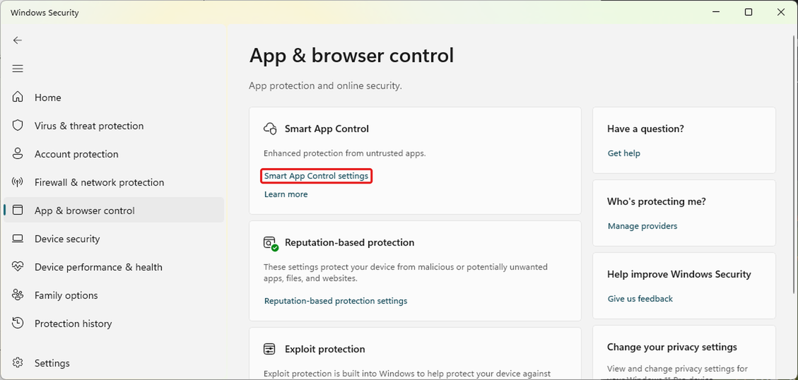
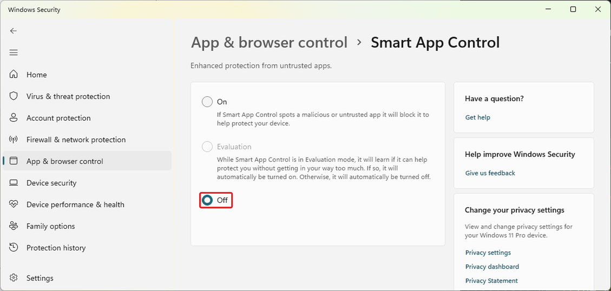

Installation
Download the setup program for Windows, or the archive for Linux, from the Download page. Check the System Requirements first.
Windows
- Run
DxAtlasProSetup-v.X.Y.exe, where X.Y is the version number. The setup needs administrator rights, and Windows asks for them when it starts; - accept the Licence Agreement;
- if the .NET 10 Runtime or the Microsoft Visual C++ Redistributable is not on the computer, the setup downloads and installs it;
- optionally, tick Create a desktop shortcut;
- when the setup finishes, leave Launch DX Atlas Pro ticked to start the program.
The program is installed in C:\Program Files\Afreet\DxAtlasPro, with a shortcut in the Start
menu. The setup also registers the COM interface that lets programs written for DX Atlas 2 work
with DX Atlas Pro; see the Developer's Guide.
To install a new version, run its setup over the old one. Your settings are kept.
If Windows blocks the setup
The setup program is not code-signed, so Windows warns about it as it warns about any new program from a small developer. Find the message you see below.
Edge says the file "isn't commonly downloaded"
In the Downloads list, click ... beside the file, then Keep:

Edge then asks you to make sure you trust the file. Click the arrow on the Delete button and choose Keep anyway:

"Windows protected your PC"
This message appears when you run the setup. Click More info:

then click Run anyway:

The setup does not start at all
Right-click the downloaded file in File Explorer, choose Properties, tick Unblock at the bottom of the General tab, click OK, and run the setup again:

Smart App Control blocked an app
Smart App Control, where it is on, blocks unsigned programs, and none of the steps above get past it. Instead of "Windows protected your PC", the setup shows this message:

You can see whether Smart App Control is on in Windows Security. Open it from the Start menu and click App & browser control:

then click Smart App Control settings:

To run the setup, set Smart App Control to Off. Windows does not let you turn it back on later without resetting the computer:

Uninstalling
Uninstall DX Atlas Pro from Settings > Apps > Installed apps in Windows. Your settings are
not removed; they stay in %APPDATA%\Afreet\Products\DxAtlasPro, and you can delete that folder
by hand.
If DX Atlas is also installed on the computer, uninstalling DX Atlas Pro removes the COM registration that the two programs share, so reinstall DX Atlas afterwards for the programs that use its COM interface.
Linux
The Linux version is a self-contained archive: it needs no installation and no .NET Runtime.
Unpack the archive to any folder, for example your home folder; it creates a
DxAtlasProfolder there, so do not create one yourself:tar -xzf ~/Downloads/DxAtlasPro-v.X.Y-linux-x64.tar.gz -C ~Replace X.Y with the version number, and
~/Downloadswith the folder you downloaded the archive into if your browser saved it elsewhere;run the program:
~/DxAtlasPro/DxAtlasPro
To install a new version, first delete the old DxAtlasPro folder, then unpack the new archive
as in step 1:
rm -rf ~/DxAtlasPro
Your settings are not in that folder, so they are kept: they are in
~/.config/Afreet/Products/DxAtlasPro. To uninstall, delete the program folder and, if you
do not need your settings any more, that folder too.